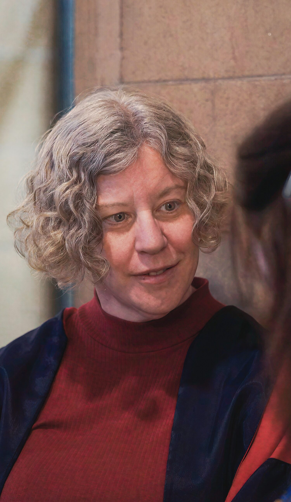
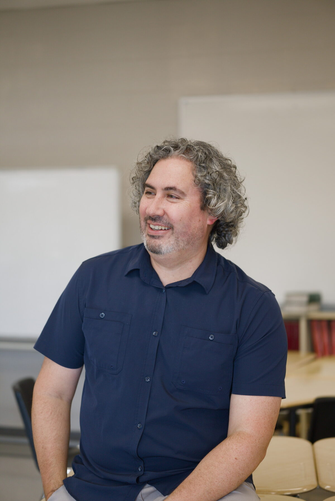
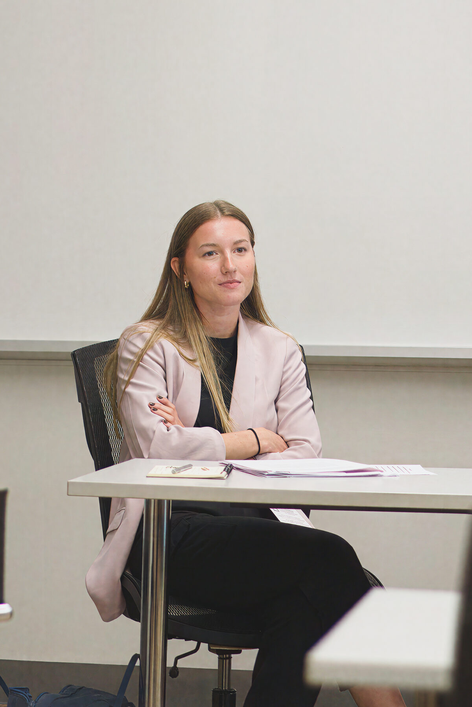
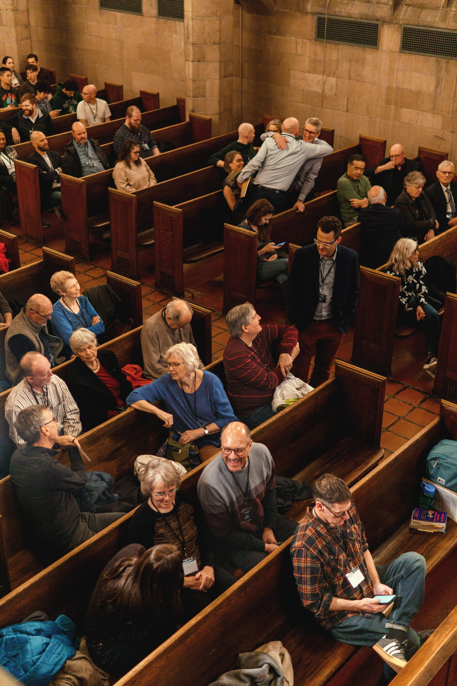

ii. Our Students3
ii.Our Students
Two Junior Members and one graduate on what changed for them this year.
David Grills
I think teachers should be the first learners in their classroom.
Figures cover the academic year September 2025 to August 2026 unless marked otherwise. Download the PDF.

Beth Green on a year of community, and the many people it gives us reason to thank.
Dear friends of ICS, I became President on July 1, which puts me in the slightly awkward position of introducing a year I mostly missed. So I have done what newcomers should: listened, read back through a year of newsletters, and asked people what mattered. What I heard, again and again, was a story about a community whose members kept showing up for one another.
The year began with the Fall Retreat at Crieff Hills, and a week later the community gathered again to give thanks for the life of Calvin Seerveld, a teacher and colleague many of you knew and loved. It ended at Convocation in May, where four graduates received their degrees and John A. Olthuis was awarded an honorary Doctor of Letters. In between came seminars, conferences and new books, and the quieter work that holds a school together. But the heart of this report is our Junior Members. In the pages that follow you will meet two current students and an alum, and see what study at ICS has meant for them and the communities they serve.
All of this happened under the leadership of Ron Kuipers, and I want to thank him by name. He led ICS steadily and hopefully, and gave his time generously as a teacher and writer as well as President. In his monthly reflections he kept returning to a hope that costs something, ending in June with the conviction that “wherever a light shines in the darkness, the darkness will not overcome it.” He has handed on the baton with gratitude and hope, and I receive it in the same spirit, and I am glad Ron remains by my side, as a colleague.
A report like this tells the bright part of the story. Any year in a community also holds illness, loss and work that goes unseen, and gratitude does not pretend otherwise. When Paul urged an anxious church in Thessalonica to encourage one another, to rejoice, pray and give thanks, he was not selling positive thinking. He was describing a community held together by the grace of God. That is the community I have found at ICS.
You are part of it. Your gifts, prayers and friendship sustain the seminar where a Junior Member’s question becomes research, and the Free to be Faithful course that brings ICS scholarship to people who will never sit in one of our seminar rooms. You will find an account of our finances at the back of this report, because you deserve to see how your trust was used.
Thank you.
Beth GreenPresident, Institute for Christian Studies

Two Junior Members and one graduate on what changed for them this year.
I think teachers should be the first learners in their classroom.
Early in his Grade 10 Old Testament course, David Grills asks his students how many sons Abraham had. No one says eight. Most have studied Genesis since kindergarten and, he says, “arrive feeling, okay, I know this already.” Being confidently wrong is where his teaching starts.
David has taught Bible at Hamilton District Christian High since 2013. When Gideon Strauss invited him into a new master’s program for working educators, the MA-EL, he said yes. “I just wanted to be a better teacher,” he says.
He was among its first students, and COVID stretched the degree to four years. “It’s like trying on a jetpack that’s never been tested,” he says. “Sometimes it goes left when you want to go right, and that was fine.”
What he took back to class was language “for things I was doing intuitively.” A course on reflective practice taught him to keep adjusting and to invite feedback, even a quick fist-to-five check from students. His final project, a podcast, asked how to rekindle wonder in Bible class.
Now he is back as a PhD Junior Member, still teaching full time. “The master’s was for my students,” he says. “The PhD is for me.” His research now turns to a phenomenology of religious experience, guided by Paul Ricoeur. Time is the hard part (“I had to use every moment”), yet the work keeps coming home: a seminar presentation on Teresa of Ávila is already reshaping his New Testament class.
This fall David began teaching Biblical Foundations for ICS, to teachers in their thirties and forties. “They have the same aha moments as my 15-year-olds,” he says. “Here they are going, ‘I didn’t know this about the Bible.’ That also happens on a random Wednesday in my Grade 10 class.”

My students ask the hardest questions in the building. ICS taught me not to rush past them.
He teaches senior humanities at a Christian high school, and for years he has kept a list on the corner of his whiteboard titled “Questions we didn’t get to.” Most of them are about suffering, justice and whether faith can survive a hard argument. Coming to ICS was, in part, an attempt to get to them.
He chose ICS because he wanted to study philosophy inside a tradition rather than against one. In his first seminar he read Dooyeweerd and Arendt side by side, and found himself arguing with both. “It was the first time in years that someone pushed back on my thinking and I was grateful,” he says.
His research this year looked at how adolescents form moral judgments, and how a classroom can make room for doubt without abandoning conviction. He tested some of those ideas with his own students, with their permission, and wrote about the results in a piece for the ICS Substack that drew more readers than any post that month.
Studying while teaching full time has meant early mornings and long Saturdays. His Senior Member supervisor met with him every two weeks, often by video at the end of a school day. Those conversations, he says, were where the real education happened.
He has started to share what he is learning with colleagues, leading a reading group for teachers at his school. The list on his whiteboard is shorter now. Not because the questions went away, but because he has learned how to stay with them.
He hopes to complete his thesis next year and to keep teaching in a high school. “People assume graduate study is a way out of the classroom,” he says. “For me it was a way back in.”
Every week I use something I learned at ICS, usually when the easy answer isn’t the right one.
When she graduated from ICS, she assumed she would go on to a doctorate. Instead, a job posting at a community housing organization caught her eye, and she has been there ever since, now leading its policy and research work.
It is not the career she planned, but she says it is the one ICS prepared her for. Her thesis on the idea of “home” in Reformational philosophy turned out to be a practical document. It gave her a way to talk about housing as more than shelter: as the place where belonging, dignity and responsibility take shape.
That framing has travelled. She has presented it to city staff, to church groups trying to decide what to do with empty buildings, and to tenants’ associations wary of both. “I learned at ICS that you can disagree with someone and still take their view of the world seriously,” she says. “That turns out to be most of my job.”
She stays connected to the school. This year she joined a Free to be Faithful course as a participant, and she now mentors a current Junior Member who is weighing a similar path between academic work and community practice.
Looking back, she credits the size of the place. Small seminars meant there was nowhere to hide, and Senior Members who knew her work well enough to tell her when it was not yet good enough. Those habits of careful reading and honest feedback are the ones she tries to pass on to her own staff.
Her advice to current students is simple: “Don’t assume your thesis only matters to the people who will read it. Someone out there needs the way of thinking you are learning, even if they will never know where it came from.”
Who studied at ICS this year, and in which programs.
Highlighted values repeat 2024–25 figures as stand-ins.

The questions we study belong to the whole church. This year our lifelong learning programs took them well beyond St. George Street.
Short courses for pastors, teachers and curious adults.
The Summer Big Read drew 1,277 registrants.
Reenchanting the World and Courageous Faith in a Time of Fear.
Essays on faith, scholarship and public life.
Highlighted figures repeat 2024–25 numbers as stand-ins.
Everything in this report was made possible by people who chose to stand with ICS. To our donors, our partner churches and foundations, our volunteers, our Board of Trustees, and our Senior Members and staff: thank you.
Your gifts funded bursaries that let students say yes. Your prayers and encouragement sustained us through a year of change. Your presence at lectures, in reading groups and in our inboxes reminded us why this work matters.
We are especially grateful to [named foundation or estate, if recognized], whose support this year [made something specific possible].
Institute for Christian Studies
59 St. George Street, Toronto, Ontario
icscanada.edu · 1-416-979-2331
| Donation income | $745,318 | |
|---|---|---|
| Donations | 577,514 | |
| Church contributions | 36,794 | |
| Bequests | 131,010 | |
| Tuition and fees | 253,162 | |
| Investment income | 114,329 | |
| Okia Fund and other fund transfers | 56,476 | |
| Other income | 86,107 | |
| Total revenues | $1,255,392 |
| Salaries, benefits and allowances | $997,880 | |
|---|---|---|
| Academic and research | 138,437 | |
| Rent | 51,200 | |
| Office supplies and overhead | 60,226 | |
| Consulting and professional fees | 98,780 | |
| Advertising and promotion | 12,443 | |
| Conferences and events | 18,049 | |
| Total expenditures | $1,377,015 |
Revenues less expenditures−$121,623
Summary of the audited financial statements for the year ended June 30, 2026. Bars show each line’s share of its total.
The complete audited statements are available on request from the ICS finance office.
| Line | 2025–26 | 2024–25 | Share |
|---|---|---|---|
| Donation income | $745,318 | $503,832 | |
| Donations | 577,514 | 385,626 | |
| Church contributions | 36,794 | 61,496 | |
| Bequests | 131,010 | 56,710 | |
| Tuition and fees | 253,162 | 175,015 | |
| Investment income | 114,329 | 120,373 | |
| Okia Fund and other fund transfers | 56,476 | 201,688 | |
| Other income | 86,107 | 8,985 | |
| Total revenues | $1,255,392 | $1,009,893 |
| Line | 2025–26 | 2024–25 | Share |
|---|---|---|---|
| Salaries, benefits and allowances | $997,880 | $1,060,169 | |
| Academic and research | 138,437 | 82,400 | |
| Rent | 51,200 | 49,528 | |
| Office supplies and overhead | 60,226 | 52,664 | |
| Consulting and professional fees | 98,780 | 23,788 | |
| Advertising and promotion | 12,443 | 14,457 | |
| Conferences and events | 18,049 | 8,961 | |
| Total expenditures | $1,377,015 | $1,291,967 |
| As at June 30 | 2026 | 2025 |
|---|---|---|
| Assets | $1,500,688 | $1,686,657 |
| Liabilities | 74,527 | 133,323 |
| Fund balances | 1,426,161 | 1,553,334 |
| Total liabilities and fund balances | $1,500,688 | $1,686,657 |
| Fund balances represented by | ||
| General Fund | $972,028 | $1,093,651 |
| Restricted Fund | 422,506 | 422,940 |
| Fixed Asset Fund | 31,627 | 36,743 |
| Total fund balances | $1,426,161 | $1,553,334 |
Summary of the audited financial statements of the Institute for Christian Studies for the fiscal year ended June 30, 2026. Figures for 2025 are the prior-year comparatives.
Revenue and expenditure totals are the sums of the lines shown. Bars show each line’s share of its total.
The revenue line reported last year as “Okia Fund and Reinders Bursary” is now “Okia Fund and other fund transfers”; the 2025 comparative is unchanged.
The complete audited statements are available on request from the ICS finance office.
Set in Spectral and Spectral SC. Rubrics in vermilion mark what to notice.